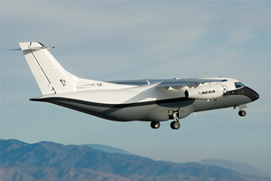

|  | 상품가격 | 9,800,000,000원 |
|---|---|---|
| 원산지 | 국내 | |
| Advanced Composite Cargo Aircraft (ACCA) | 배송 | 무료 평균배송일 8.0일 |
| 후기 |   | |
The United States Air Force Research Laboratory selected the Lockheed Martin Skunk Works® to build an X-Plane with new materials and structural concepts that could forever change the way we envision and fly aircraft.
Under the Advanced Composite Cargo Aircraft (ACCA) program, we designed, developed and manufactured a technology demonstration aircraft that featured advanced structural concepts and manufacturing techniques integrated with an advanced aerodynamic design. The purpose was to demonstrate the application of structural design and manufacturing technologies to significantly reduce the structural weight and cost of future military transport type aircraft. Phase I, II and III were completed and with 15 successful flights of ACCA in 2009-2010.
The use of composites in aircraft manufacturing will mean lighter, less expensive and more durable aircraft that also are easier to maintain. For example, the manufacturing process will require far fewer parts and will dramatically reduce corrosion and metal fatigue issues.
ACCA was the first of several steps intended to advance the readiness of multiple technologies needed for the next generation of theater airlift aircraft.
from: http://lockheedmartin.com/us/products/acca.html
Under the Advanced Composite Cargo Aircraft (ACCA) program, we designed, developed and manufactured a technology demonstration aircraft that featured advanced structural concepts and manufacturing techniques integrated with an advanced aerodynamic design. The purpose was to demonstrate the application of structural design and manufacturing technologies to significantly reduce the structural weight and cost of future military transport type aircraft. Phase I, II and III were completed and with 15 successful flights of ACCA in 2009-2010.
The use of composites in aircraft manufacturing will mean lighter, less expensive and more durable aircraft that also are easier to maintain. For example, the manufacturing process will require far fewer parts and will dramatically reduce corrosion and metal fatigue issues.
ACCA was the first of several steps intended to advance the readiness of multiple technologies needed for the next generation of theater airlift aircraft.
from: http://lockheedmartin.com/us/products/acca.html